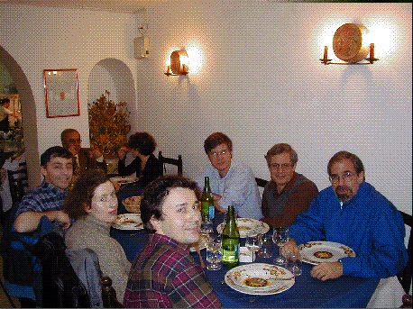

Welcome to Harbourne's Home Page

If you want to contact me, my email address is:
b harbourne 1 @ unl . edu (just take out the spaces) .
Vital Info
Brian Harbourne, Willa Cather Professor and 2022 Fellow of the AMS
331 Avery Hall
Department of Mathematics
University of Nebraska--Lincoln
Lincoln, NE 68588-0130
USA
Research Interests
My research interests are in Algebraic Geometry and Commutative
Algebra. Currently, I am interested in geproci point sets,
unexpected hypersurfaces, the Containment Problem, line arrangements in the plane,
and the Bounded Negativity Problem.
Most of my papers are available, at least in preliminary form, on the arXiv.
Slides of selected talks
McMaster Algebra Seminar (January 26, 2023): Geproci sets: a confluence of geometry, algebra, combinatorics and representation theory (50 minute talk)
KUMUNU (October 8-9, 2022): Algebraic Geometric Concepts Motivated by Inverse Scattering (45 minute talk)
INdAM Conference on: Strong and Weak Lefschetz Properties, 11-16 Sept, 2022: Lefschetz properties, unexpectedness and geprociness (35 minute talk)
Special Session on Commutative Algebra, Canadian Math Society (virtual meeting), December 6, 2021: The concept of geproci subsets of P3: a timeline (20 minute talk)
Matemáticas en Español, Univ. Nebraska, 2 Diciembre, 2021: La ley del grupo para curvas cúbicas (es decir, curvas algebráicas del grado 3)
Commutative Algebra Seminar, Univ. Nebraska, December 1, 2021: The concept of geproci subsets of P3: a timeline (50 minute talk)
Algebraic Geometry and Commutative Algebra Seminar, Univ. Notre Dame, November 9, 2021: The concept of geproci subsets of projective 3-space (50 minute talk)
AMS special session, October, 23: The concept of geproci subsets of P3 (20 minute talk)
Algebra Seminar, Univ. Arkansas, April, 2021: Various versions of the resurgence and how they are related
Colloquium, Univ. Arkansas, April, 2021: Rational Amusements to Lighten a Long Year of Social Distancing
Matemáticas en Español, Univ. Nebraska, Febrero, 2021: Cómo Napier empoderó a Kepler quien inspiró a Newton a cambiar el mundo
MFO, Oberwolfach, January, 2021: H-constants and Line Arrangements
Seminario, Universidad Michoacana, Noviembre, 2019: ¿Qué tan singular puede ser una curva algebraica plana?
MFO, Oberwolfach, November, 2019: The role of line arrangements in some open problems in algebraic geometry
CIRM, Luminy, October, 2019: New work on unexpected varieties (and line arrangements) with a short history and connection to Lefschetz properties
Vietnam-USA Joint Mathematical Meeting, Quy Nhon, Vietnam, July, 2019: Recent results on computability of certain asymptotic quantities
Vancouver CMS Winter Meeting, December, 2018: Primer on unexpected hypersurfaces
Seoul KMS-AMS Joint Meeting, December, 2009: Asymptotic Invariants of Ideals of Points
Penn State AMS sectional, October, 2009: Powers versus Symbolic Powers of Ideals
Other Links
Math Dept Site Map (javascript)
What time is it?
List of UNL Campus Buildings, with Map
Academic Calendar
Find link to Final Exam Schedule here
UNL Schedule of Classes